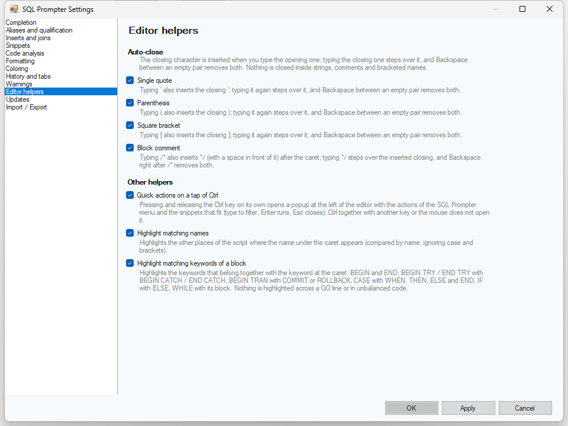
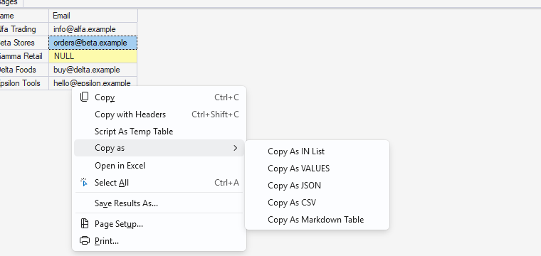

Editor and grid tools
Running part of a script, previewing a change before it runs, small editor helpers and the results grid.
Run a statement
| Command | What it runs |
|---|---|
| Run Statement At Caret Shift+F5 | The statement the caret is in, from its first to its last token (a trailing semicolon included). Statements are separated as in completion, and by GO. An existing selection is run as it is, like F5. |
| Run Statements Up To Caret Ctrl+Shift+F5 | From the start of the script (earlier batches included) to the end of the statement at the caret. A caret between statements, after the last one or on a GO line runs through the last statement before it. With nothing before the caret, the status bar says so. |
Both run through the normal Execute, so the confirmations and the query history apply.
Preview and dry run
| Command | What it does |
|---|---|
| Preview UPDATE/DELETE As SELECT | Opens, in a new window on the same connection, a SELECT over the same rows as the UPDATE or DELETE at the caret (or in the selection); nothing is run. For an UPDATE, the new value of every assigned column is shown as expr AS [New col]. TOP and OPTION are kept. It refuses, with the reason in the status bar, a statement that starts with a CTE, has OUTPUT, table hints or an alias before SET, sets only variables or is several statements. |
| Run And Roll Back (Dry Run) | Wraps an UPDATE, DELETE, INSERT or MERGE in BEGIN TRANSACTION; ... SELECT @@ROWCOUNT AS [Rows affected]; ROLLBACK TRANSACTION; in a new window. An OUTPUT clause stays and shows the rows. |
Editor helpers

- Auto-close (settings page Editor helpers, each pair separately): typing
',(,[or/*also inserts the closing character (*/for a block comment, with a space in front); typing the closing character steps over the inserted one, and Backspace between an empty pair removes both. Nothing is closed inside strings, comments and bracketed names. - Highlight matching names: the other places in the script where the name under the caret appears, compared by name ignoring case and brackets.
- Highlight matching keywords of a block: the keywords that belong together with the one at the caret:
BEGIN/END,BEGIN TRY/END TRYwithBEGIN CATCH/END CATCH,BEGIN TRANwithCOMMITorROLLBACK,CASEwithWHEN,THEN,ELSE,END,IFwithELSE,WHILEwith its block. Nothing is highlighted across aGOline or in unbalanced code. - Add Commas To Selected Lines and Add Quotes And Commas To Selected Lines (Refactor menu) prepare a list of values from lines of text.
The results grid

| Command | What it does |
|---|---|
| Copy as IN List | The selected values of one column as ('a', 'b', 3); disabled while the selection covers several columns. |
| Copy as VALUES | The selected rows as VALUES rows. |
| Copy as JSON, CSV, Markdown Table | The selection (with its column names) in that format. |
| Script As Temp Table | Scripts the selected rows, with their column names, as INSERT statements into #temptable (NULL as NULL, plain numbers as numbers (also those the grid shows with the decimal comma of your regional settings, written with a point; they become decimal, a number with an exponent becomes float), binary values 0x... as varbinary, everything else as N'...'; a new statement for every 1000 rows) in a new query window. |
| Open in Excel | Writes the selection (the whole result when nothing or one cell is selected) as an .xlsx file in the temporary folder and opens it. Names are in a bold, frozen first row; text is never turned into formulas; NULL is an empty cell; each column is typed by the look of its values (for example whole numbers up to 15 digits without a leading zero, and decimals). Needs Excel, or any program that opens .xlsx. |
The same commands are in the SQL Prompter menu (Copy Grid Selection As, Script As Temp Table, Open in Excel).
Check for updates
SQL Prompter > Help > Check for Updates asks GitHub for the latest release now. When a newer version exists a window shows the installed and the new version with Update, Remind me tomorrow and Skip this version. Update downloads the VSIX from the releases of the repository, verifies its SHA-256 against the checksum of the same release and starts the installer of SSMS, which waits until SSMS is closed. The daily automatic check can be turned off (Settings > Updates).